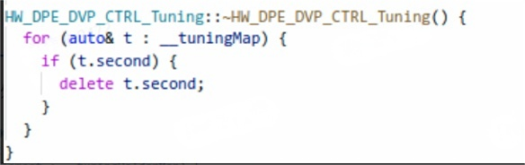

相机内存优化
安卓相机内存优化与安卓系统内存优化基本一样，区别只是针对的对象不同。后者针对整个安卓系统的所有进程，而相机内存优化仅针对相机相关的进程。
相机相关进程一般有三个：APP，CameraServer，CameraProvider(CameraHal)。部分手机厂可能会有第四个，如：自家的第三方算法处理进程，这里不做考虑，默认第三方集成于CameraProvider进程。
优化项包括：开机内存优化，内存峰值超标，内存泄露，内存驻留优化，后台任务驻留优化。
内存指标与分析命令
内存指标
在介绍相机内存优化之前，让我们先来了解一下如下几个概念：
| 指标 | 定义 | 特点 |
|---|---|---|
| VSS（Virtual Set Size）虚拟内存集大小 | 进程可以访问的所有内存页面的大小总和，包括共享库、代码、数据以及堆和栈内存等所有部分，包含未加载到物理内存中的部分 | 值通常最大，不能很好地反映进程实际占用的物理内存量 |
| RSS（Resident Set Size）常驻内存集大小 | 进程当前驻留在物理内存中的页面大小总和，包括进程的代码段、数据段、堆和栈等部分实际占用的物理内存，但共享库被多个进程共享的部分会被重复计算 | 比VSS更能反映进程实际占用物理内存情况，但会高估实际内存使用量，因共享库重复计算 |
| PSS（Proportional Set Size）比例内存集大小 | 在RSS基础上，考虑共享内存因素，将共享库等共享内存按共享的进程数量平均分配后计算每个进程的内存使用量 | 值介于RSS和USS之间，更准确衡量进程在共享内存环境下的实际内存占用情况，是分析多进程系统内存使用的有用指标 |
| USS（Unique Set Size）独占内存集大小 | 进程独占的物理内存大小，不包括共享库等共享内存部分，只计算进程自身的代码、数据、堆和栈等独占部分的物理内存占用 | 最能准确反映进程真正独占物理内存的指标，对分析内存泄漏等问题有帮助 |
内存的大小关系：VSS>RSS>=PSS>=USS
在实际分析中，一般是以PSS的内存为准，且也是最符合实际情况的统计值
常用内存分析命令
异常分析方向概述
Code
- .so mmap 过高
- 使用showmap / smaps 查看进程跑起来后各库所占用内存情况和内存分配的映射记录，找到占用比较大的so库，分析是否为合理占用
- .apk mmap 过高
- APK代码占用内存大，也就是类信息占用的内存很大，该部分内存属于方法区，类信息占用内存大，有可能是因为动态创建了很多类，导致这部分内存增加，检查代码中是否有使用了类似ApplicationInfo.loadLabel函数。
- 参考：Android性能优化-方法区导致内存问题实例分析
showmap 和 smaps 的关系：
实际上读取smaps中的数据然后规整分类，测试中showmap和cat/proc/pid/smaps抓取要连续，间隔久了内存会有变化
Java Heap
- dump hprof 排查 heap 分布
1
adb shell am dumpheap com.android.camera /data/local/tmp/test.hprof
- MAT分析，常规java引用链那一套
- Dalvik Other，值异常变大的可能原因：
- 类及方法数目的增大（关注/dev/ashmem/dalvik-aux-structure项）；
- ○ dalvik-heap 的增加（关注/dev/ashmem/delvik-bitmap项）；
- 代码复杂度的增加变大（关注/dev/ashmem/dalvik-jit-code-cache项）
Native Heap
- malloc debug
- 是android默认集成的native内存调试工具。设计思路是对lib.so库添加一层wrapper,在wrapper中添加一些记录数据的队列等。把每次申请的内存以指针为索引记录添加到队列中，释放时从队列中移除该记录。当出现可疑内存泄漏时，打印出该队列中的记录，然后结合代码检查这些记录是否存在内存泄漏。
- Perfetto
- malloc debug的开销较大，在调试中往往会比较卡顿，此时使用 Perfetto 是一个不错的选择，可以实现对native heap相关内存申请调用栈的抓取。
- Profiler
- 若是APP存在内存泄露，也可以直接使用Android Studio中内置的Memory Profiler工具，同样可以获取需要的调用栈。
- LSAN
- Lsan是集成在Asan中的内存泄露检测器
Graphics
- EGL mtrack
- 使用 dmabuf_dump 确认DMA/ION的分布。
- 若是MTK平台，还有更方便的节点可供debug： all_heaps。
- Gfx dev/GL mtrack
- GPU相关申请的内存一般于平台强相关，需要查看GPU相关的节点或者找平台协助，在高通平台中GPU使用kgsl，MTK平台使用mali，调试方式有差异。
Objects
- Objects是统计App内部组件对象个数，其中包括Views、ViewRootImpl以及Activities个数，在Activity onDestroy后应该都会回收清零，如果onDestroy调用后这几个对象个数没有清零，就可能发生了内存泄漏。
内存优化项
开机剩余内存优化
安卓开机剩余可用内存是指安卓设备在完成开机启动过程后，系统和已经自动运行的应用程序占用一部分内存后，剩余的可以被其他应用程序或系统进程使用的内存空间。这部分内存对于设备的流畅运行非常关键，它决定了在开机后还能同时运行多少其他应用。
相机相关的三个进程中，CameraServer和CameraProvider是守护进程，就像一个默默工作的 “守护者”，在系统启动后就自动运行，不需要用户手动开启，并且在系统运行期间一直处于活动状态，为系统和应用提供拍照、录像和扫码等服务。因此，它们不可避免的会在开机后占用一直内存。
CameraServer占用内存较小，因为其主要包含了Google对相机的Native实现所必须的代码段和数据段。
CameraProvider占用内存较多，是相机进程的内存占用主要来源。CameraProvider主要负责管理相机设备的底层硬件资源，其包含了平台厂商对于硬件抽象层的实现，且很多手机厂商为了做影像能力开放，往往会将第三方算法集成在CameraProvider中，导致其占用的内存往往较大。
拆解方法：
- 使用dumpsys meminfo当前时刻app的内存占用情况关于 meminfo 的内容描述可查看：dumpsys meminfo 描述
1
adb shell dumpsys meminfo package_name|pid [-d]
- 根据 dumpsys meminfo 中具体的占用项进行针对性优化
优化思路：
主要优化思路，针对CameraServer和CameraProvider：
- 减少开机阶段，CameraServer和CameraProvider不必要的自运行流程，降低堆栈内存和so map等
- 尽量减少不必要的pin so操作
- 尽量减少相机tuning bin和sensor bin的大小，去除不必要或者冗余部分
内存泄露
相机内存泄露是指相机应用程序在使用过程中，CameraAPP，cameraServer，CameraHal三个进程，一些不再被使用的内存空间没有被正确地释放，导致这些内存被 “占用”，但是却无法被有效地利用。
产生的原因大体可以分成两种，一是程序中的对象引用管理不当。在相机软件中，可能存在一些对象（如存储图像帧数据的对象），当这些对象的生命周期结束后，如果程序仍然持有对它们的引用，系统无法将其占用的内存释放。常见的是ImageBuffer使用完毕之后，仍然持有对其的引用。二是资源分配和释放的不匹配。常见的是使用像malloc()或new这样的函数进行动态内存分配时，没有正确地使用对应的free()或delete函数来释放内存。
在相机运行的过程中，用户申请的内存主要是heap和DMA，因此泄露问题也一般集中于此。
随着内存泄露的积累，系统可用的内存越来越少，这会导致系统运行速度变慢。当内存泄露严重到一定程度，甚至可能引起死机重启。
heap泄露
heap主要分为Java Heap和Native Heap，这主要介绍Native Heap。
拆解方法
Malloc Debug分析内存泄露
“Malloc Debug” 是一种用于调试原生内存问题的方法。它有助于检测内存损坏、内存泄漏以及释放后使用等问题。
当启用 “Malloc Debug” 时，其工作原理是添加一个垫片层，该垫片层会替换常规的内存分配调用。被替换的调用包括：
・malloc（动态内存分配函数）
・free（释放内存函数）
・calloc（分配并初始化内存函数）
・realloc（重新分配内存函数）
・posix_memalign（按指定对齐方式分配内存函数）
・memalign（按字节边界对齐分配内存函数）
・aligned_alloc（分配对齐的内存块函数）
・malloc_usable_size（获取可实际使用的内存大小函数）
该库检测到的任何错误都会在日志中进行报告。
有关本地内存问题可用调试选项的完整说明，请参阅 Malloc Debug和使用 libc 回调跟踪本地内存。libmemunreachable+Lsan分析内存泄露(推荐)
之前native内存泄露的问题我们一般是使用malloc debug分析，但是malloc debug开销太大，会造成明显的卡顿甚至卡死，通过限制backtrace frame或者限制size可以改善，但是总体上体验仍较差。内存泄露这块目前完全可以使用lsan和libmemunreachable替代来分析。
Android 的 libmemunreachable 是一个零开销的本地内存泄漏检测器。它会使用不精确的“标记-清除”垃圾回收器遍历所有本机内存，同时将任何不可访问的块报告为泄漏。因其零开销的特性，可被用在相机Native内存泄漏的检测当中，用其来报告有无泄露及泄露多少。
当libmemunreachable检测到内存泄露之后，便需要使用Lsan对其进行分析和修复。Lsan是集成在Asan中的内存泄露检测器，具体参考AddressSanitizerLeakSanitizer。不直接使用Lsan检测是因为Lsan往往需要编译Asan版本或者hook相关的so，并且需要在程序退出时检查所有未释放的内存，适合在开发和测试阶段使用，不适合日常监控。
优化思路
先使用 libmemunreachable 检测是否有泄露，确认泄露存在后使用 Lsan 定位泄露位置，并结合代码修复。
举个栗子：
当前已经使用 libmemunreachable 检测到有leak存在
有时候lsan报告直接解callstack不能直接定位到原因，需要结合代码流程逻辑来分析。
这里举一例，顺便说明下lsan打印的direct link和indirect leak.
- Direct leak: not reachable from anywhere
- Indirect leak:reachable from other leaked blocks
一般来说indirect leak是由于direct leak导致的，如果direct leak修复了，那么indirect leak也会消失。
比如这里libfeature.stereo.provider.so相关的leak，indirect leak相当多，如果我们去解析indriect leak的callstack，会发现这里报告的leak看起来都有正确的释放：

正确的方法是先去处理direct leak的问题，添加log析构有执行到，看起来也有正确的释放资源：
最后分析发现是初始化资源调用两次，导致析构时只释放了最后一次构造的资源，
第一次new的对象全部leak：
当然，也需要从流程上检查为何会初始化两次。
另外提一嘴：
有些情况，leak的位置很容易确定，但是后面有很多的if else return，如果使用delete的方式，恐怕要在各处return的地方都要考虑资源释放的问题，这时我们可以使用RAII封装资源的方式简洁处理。比如这里，使用资源之前中间有很多的异常处理return，我们使用C++智能指针来处理就方便的多：
1 |
|
总的来说，智能指针是 C++ 中一种非常有效的避免内存泄露的机制，尤其是在复杂的程序结构、涉及多线程或者对象间复杂引用关系等场景下，能极大地减轻程序员手动管理内存释放的负担，提高程序的稳定性和可靠性。
DMA泄露
在 Android Camera 中，几乎所有图像相关的 Buffer 都是来源于 DMA-buf。例如预览 / 拍照时，从上层传下来的装载图像数据的 Gralloc Buffer；MTK/Qcom hal 层中，缓存 sensor 图像数据的 ImageBuffer，各个算法节点之间的中转 ImageBuffer。因此DMA泄露在相机场景中也较为常见。
拆解方法
拆解方法主要使用：dmabuf_dump
优化思路
按照以往经验DMA Buffer的泄露往往是流程上出现异常，只要确认到leak的位置，便可以快速知道leak的原因，常见的原因有：
- 算法库leak，调用init之后，退出相机调用匹配的uninit
- 采用智能指针管理Buffer，但是退出相机后，引用没有销毁，引用计数未归零（常见于常驻进程Camerahal中，未将智能指针置空，导致某个类一直持有）。
然而，需要注意的是，并不是所有的内存泄漏都能被及时发现并修复。内存泄漏问题的发现与修复工作，高度依赖于开发人员对代码的深度理解以及严谨优良的编程习惯。在软件开发过程中，开发人员需要对代码的逻辑结构、数据流向、资源分配与释放机制等方面具备清晰而深刻的认知，同时在日常编程实践中遵循规范、注重细节，养成诸如及时释放不再使用的内存资源、谨慎处理对象生命周期、精准管理资源引用等良好习惯。
唯有如此，我们方能在应用程序的开发与维护进程中，高效且有力地预防内存泄漏问题的发生，并在问题出现时迅速精准地予以解决。这不仅有助于提升应用程序的整体稳定性，使其能够在长时间运行过程中保持可靠的工作状态，减少因内存泄漏引发的崩溃、卡顿等异常情况，而且还能够显著优化应用程序的性能表现，确保系统资源得以合理利用，为用户提供更加流畅、高效的使用体验，增强应用程序在市场上的竞争力与生命力。
内存峰值超标
当下，用户对相机画质体验的期望水涨船高，这促使相机功能不断丰富拓展，复杂度也随之攀升。像 sensor 尺寸持续增大以获取更高的解析力，拍照帧数接连提升来确保降噪效果，诸如此类的升级层出不穷。但这种发展也带来了新的困扰，运行相机时的峰值内存随之逐步增加，不可避免地造成了诸多使用问题。
过高的峰值内存常常引发相机卡顿，致使画面丢帧、操作延迟，还会频繁出现杀后台的情况，严重破坏了用户的拍摄体验，亟待通过相机峰值优化加以解决。
在实际工作中，我们会为不同内存配置的机器制定不同的内存峰值标准，如运行内存为8G的机器标准为xG, 运行内存为12G的机器标准为yG。在实际测试过程中，每隔一定时间便获取相机的内存状态，若超过制定的保准，便认为已经发生内存超标。
在相机运行的过程中，申请的内存主要是heap和DMA，因此优化也大部分集中于此。
拆解方法
峰值超标问题可以在修复完内存泄露问题之后进行。
于相机应用场景而言，精准定位当前内存超标的状况，需凭借对日志（log）信息的细致剖析以及对直接内存访问缓冲区（dmabuf）分布情形的精准把握，以此明确内存使用超出预期标准的具体场景。在此基础上，结合所确定的特定场景实施具有针对性的优化策略，而这一系列操作都建立在对相机整体运行流程深入且全面熟悉的前提之下。
优化思路
- 裁剪featureGraph，去掉不需要的stream与featureGraph映射关系。高通平台中，在config_stream的时候会将stream与featureGraph进行映射，一旦映射完成就意味着内存的预申请。
- 裁剪pipeline，去掉不要的荣誉的pipeline或者node。高通平台中，pipeline由node与node相连接而成，在node与node之间需要Buffer作为数据流转的桥梁，因此pipeline越精简，意味着内存的分配越少。
- 错峰处理，即将内存开销大的阶段串行化，不要在同一时间执行。
- 降低并行数，减少后处理中拍照任务的并行数
- 关闭高通offlinelog和3ADebug，按照经验这部分占用几百兆的heap。
内存驻留优化
相机内存驻留，是指在完成相机的常规操作，如录像、拍照等，并退出相机应用程序后，相机进程在内存中依然留存且未被系统销毁的那部分内存空间。其中，部分内存可能是相机正常运行所必需申请的内存区域，然而，也存在因内存泄露问题而导致的不必要的内存驻留情况。
其测试方法如下：在启动相机应用之前，采集与相机相关进程的内存数据，并将其标记为 “before”；在使用完相机并退出后，再次获取相机进程的内存数据，记为 “after”。若 “after” 减去 “before” 所得的差值超出特定的标准数值，那么便可判定发生了相机内存驻留异常现象。
当相机出现过多的内存驻留情况时，会使得系统中其他应用程序可使用的内存容量相应减少，进而可能影响其他应用的正常运行，如导致它们运行卡顿、响应迟缓甚至出现闪退等问题，对整个系统的性能和稳定性产生不利影响。
拆解方法
待完成…
优化思路
相机场景，后台任务驻留优化
安卓相机应用通常会占用大量的内存资源，在其运行过程中，一旦系统内存出现不足的情况，便极有可能导致后台正在运行的其他应用程序被强制关闭，也就是所谓的 “后台应用程序被杀” 问题。
这是因为相机在启动时，会加载诸多功能模块和资源，如复杂的图像处理算法、高分辨率图像缓存、各种拍摄模式和滤镜效果的支持组件等，这些都需要占用可观的内存空间。当系统内存紧张时，为了保证相机这一前台应用的正常运行，系统往往会优先回收后台应用程序所占用的内存，从而使得这些后台应用被终止运行，这可能会给用户带来不便，例如正在后台下载文件的应用突然停止，或者正在运行的音乐播放应用被关闭等。
而相机场景，后台任务驻留优化的任务便是尽可能端好这碗水，既保证相机的内存使用，又尽量让用户察觉不到后台任务被杀。
拆解方法
待完成…
优化思路
- 降低相机场景的峰值内存，缓解系统内存的紧张情况。
- 优化LMK查杀策略。
- 启动相机时，先进行一轮内存查杀，干掉长时间不用且不可感知的后台任务，尽可能释放出足够的内存给相机使用。